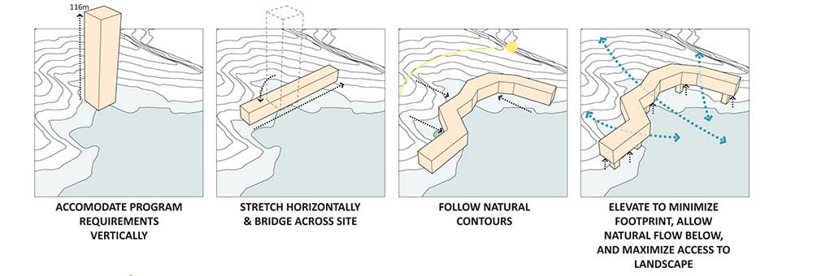

{% for image in page.images %}
A collaboration between Ryerson University and China Three Gorge's University's (CTGU), the project called on the master plan of their Water Science facilities in conjunction with the construction of a new hydro dam.

The design explores concepts in identity, landscape and interdisciplinary research. The academic departments are combined into one megastructure — a new reform towards cross-disciplinary innovation. Its minimal footprint creates new opportunities for public space on the water, intersecting academics and play. The natural wetland is maximized as an asset to the site, rather than an obstacle for development.
This project was the culmination of travelling across Eastern and Northern China, as documented through sketching.
Project Details